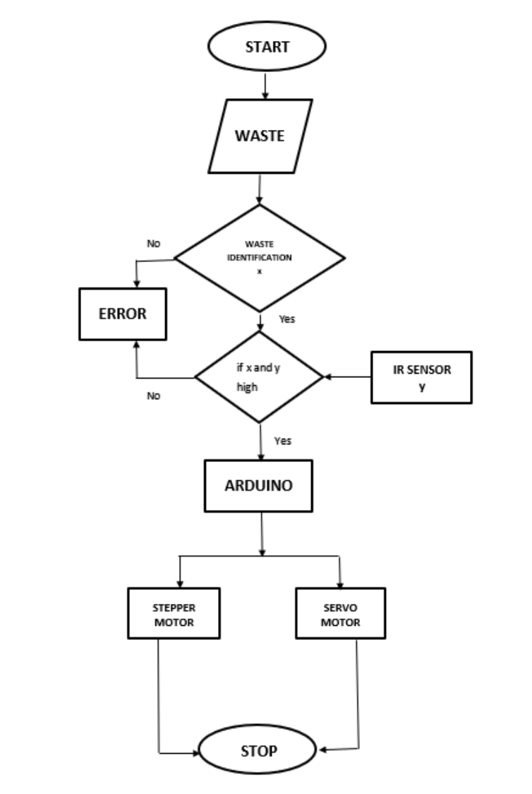
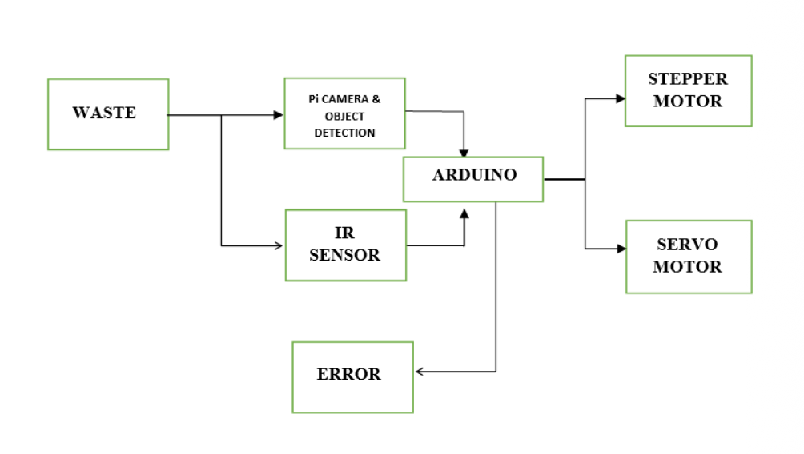

Project Context
The project identifies that hospital waste disposal workflows rely heavily on manual sorting into color-coded bins. This introduces human error and contamination risk, and makes correction difficult once waste is disposed.
Project Detail
The project focuses on reducing manual segregation errors in hospitals by combining object detection with an automated bin movement mechanism.
The project identifies that hospital waste disposal workflows rely heavily on manual sorting into color-coded bins. This introduces human error and contamination risk, and makes correction difficult once waste is disposed.
Design an automated biomedical waste bin that detects the waste category and routes it to the corresponding compartment with minimal manual intervention.

